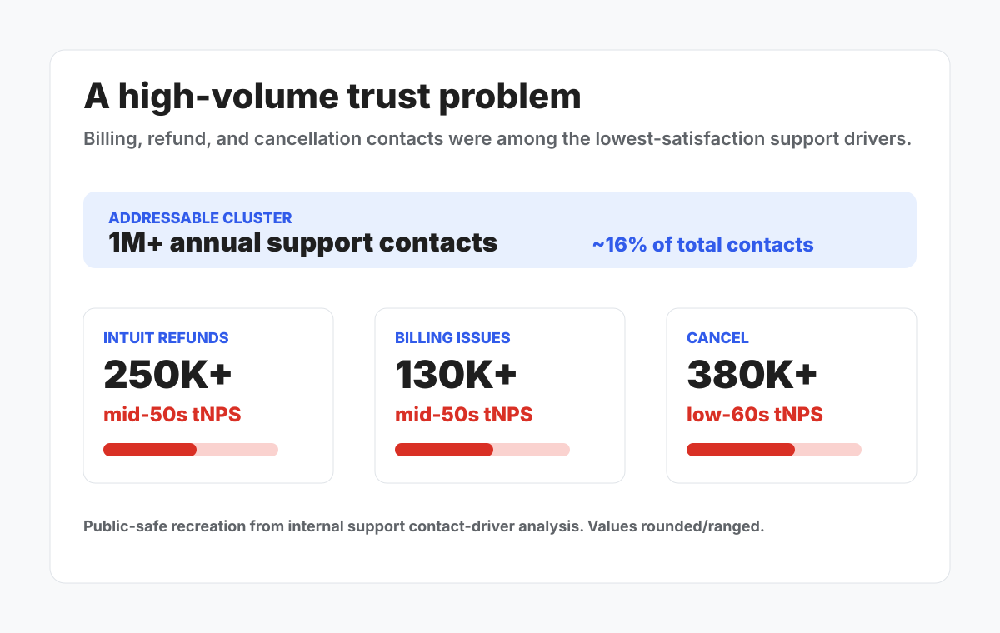
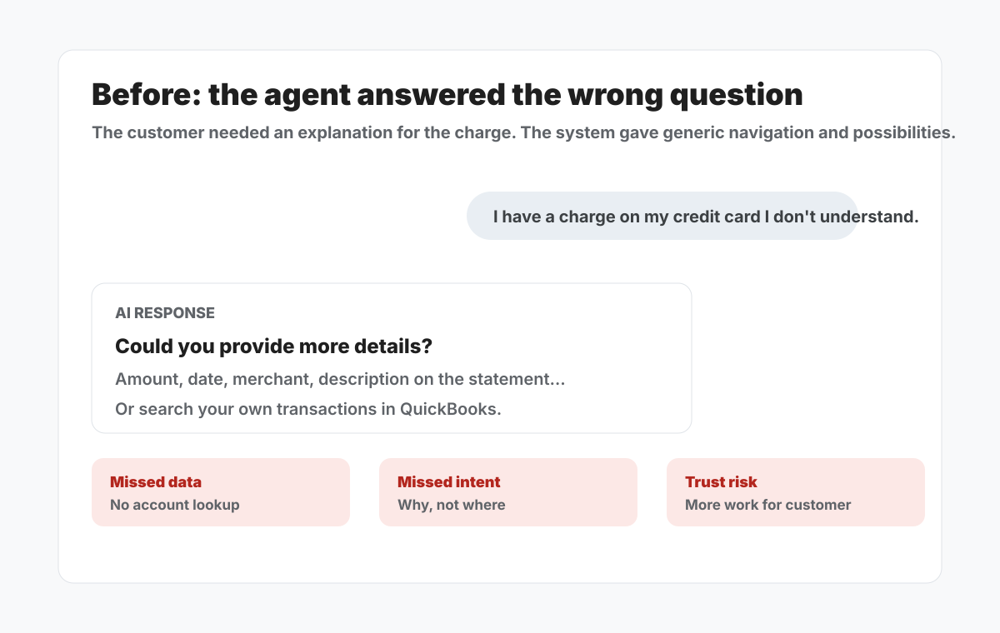
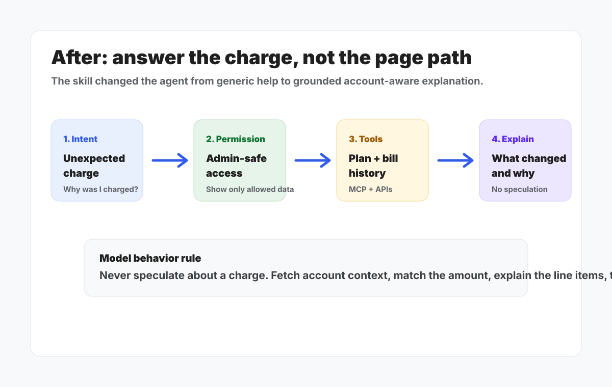

Role
Conversational AI lead for problem framing, skill behavior, prompt instructions, and tool-backed prototype.
Model UX · Agentic AI · Subscription Billing
Customers were asking why Intuit charged them. The AI support experience answered with generic navigation. I designed and co-built an account-aware Intuit Intelligence skill that could look up subscription context, explain the charge, and route sensitive billing or cancellation moments safely.
A customer sees an Intuit charge on their credit card or bank statement and does not understand it. They do not need a map to the billing page first. They need a clear explanation of what they were charged for, why the amount changed, and whether anything looks wrong.
That is a trust moment. If the system gives generic instructions, asks the customer to do the detective work, or speculates about the reason for a charge, the customer is more likely to call support, lose confidence, or cancel.
Internal support analysis showed billing, refunds, and cancellation formed a large, low-satisfaction cluster. The opportunity was not only deflection. It was restoring confidence at the exact moment customers questioned the relationship.

Current AI responses were not useless; they were misaligned. They could identify broad product context, point to billing pages, and sometimes deep-link to self-service, but they could not explain the specific charge the customer was reacting to.

The answer should not stop at “go to Settings.” It should explain the charge in plain language, using account context where permitted.
The agent should not guess that a promotion expired or a plan changed. It should fetch bill history or say it cannot verify the cause.
For cancellation, refunds, disputes, and non-admin access, the experience needed clear rules for when to answer, guide, or connect the customer to a billing specialist.
I designed the skill behavior around a simple customer promise: if we charged you, the AI should use the data we already have to explain what happened. That required moving the experience from a generic help article pattern into a tool-backed agent flow.
Recognize unrecognized charge, incorrect amount, duplicate charge, plan lookup, price change, refund, or cancel intent.
Only show billing detail to eligible admins; guide non-admin users without pretending the system failed.
Use tools to retrieve plan, add-ons, next billing date, estimated total, and bill history when available.
Match the amount, explain the why, and route to specialist support when the data cannot safely answer.

Nearly 500 labeled utterances across unrecognized charge, incorrect amount, charge lookup, duplicate charge, pricing, and vague billing inquiry.
Trigger examples, eligibility, recommended tools, intent boundaries, cancellation handling, and response-quality standards.
Coverage for statement charges, higher-than-expected bills, duplicate charges, admin access, non-admin access, refund, downgrade, and cancel flows.
Local UAT against an E2E test account showed the skill could return account-specific plan, add-on, and next-billing-date context, then route cancellation choices through the intended support paths.
The work reframed billing support from “go find your answer” to “here is what we charged, why it changed, and what you can do next.”
Visuals are public-safe recreations. Raw screenshots, internal decks, customer/account data, API endpoints, and repository details are reserved for a redacted private walkthrough.